교통기사 (2013-06-02 기출문제)
1과목: 교통계획
1. 현재의 상태가 아닌 가상의 상태에서 교통 이용자의 행동, 태도의 변화 등을 조사 · 분석하는 기법은?
- RP(revealed preference)조사
- SP(stated preference)조사
- 패널(panel)조사
- 엑티비티다이어리(activity diary)조사
(정답률: 100%)

2. 교통존(traffic zone)을 설정하는 일반적 기준으로 틀린 것은?
- 가급적 동질적인 토지이용이 포함되도록 한다.
- 간선도로가 가급적 교통존의 경계선과 일치하도록 한다.
- 교통존의 규모는 자료가 허용하는 한 작을수록 좋다.
- 행정구역과 가급적 일치하도록 한다.
(정답률: 92%)
3. 개별행태모형(Disaggregate Behavioral Model)에 관한 설명이 옳은 것은?
- 모형의 구조는 결정적 모형이다.
- 타 존에 적용하기가 곤란하다.
- 효용이론에 근거하여 구축되었다.
- 존별 집계자료를 이용하여 교통수요를 추정한다.
(정답률: 82%)
4. 아래와 같은 특징을 갖는 대중교통 요금구조는?
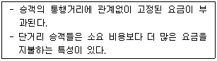
- 구역요금제
- 균일요금제
- 구간요금제
- 거리요금제
(정답률: 100%)
5. 교통체계운영(TSM)에 대한 설명으로 옳은 것은?
- 교통지구의 교통 관련 산업 경영 전략이다.
- 장기적이고 종합적인 교통체계의 운영 전략이다.
- 주로 단기적인 교통체계의 운영 전략이다.
- 대중교통수단의 요금 규정 운영 전략이다.
(정답률: 91%)
6. TSM(Transprotation System Management) 기법의 유형 중 교통수요(차량 수요)만을 감소시키는 효과를 주는 것은?
- 카풀(carpooling) 유도
- 신호주기의 개선
- 교차로에서의 도류화
- 도로 기하구조 개선
(정답률: 100%)
7. 가구당 통행발생량과 같은 종석변수를 소득이나 자동차 보유대수 등의 설명 변수들에 의해 교차 분류시켜 도출해 내는 단순하고 이해하기 쉬운 통행발생 단계의 모형은?
- 로짓모형
- 카테고리 분석법
- 다중회귀분석법
- 프라타법
(정답률: 96%)
8. 수단선택(model split) 단계에서 사용하는 모형 중 장래의 존별 통행발생량을 산출한 후 통행분포 전에 이용 가능한 교통수단별 분담률을 산정하여 각 수단별 통행수요를 도출하는 것은?
- 통행단 모형(Trip end Model)
- OD pair Model
- 엔트로피모형(Entropy Model)
- 전환곡선모형(Diversion Curves Model)
(정답률: 96%)
9. 다음 중 교통의 3대 요소로 가장 거리가 먼 것은?
- 교통주체
- 교통수단
- 교통시설
- 교통계획
(정답률: 80%)
10. 보행자 시설의 보행교통량, 보행속도, 보행밀도의 관계식으로 적합한 것은? (단, V : 보행교통류율(인/분/m), S : 보행속도(m/분), D : 보행밀도(인/m2), M : 보행점유공간(m2/인))
- V = S × D
- V = S ÷ D
- V = M × S
- V = M ÷ S
(정답률: 97%)
11. 계획대상지 내 교통존을 단위로 장래의 사회·경제적요인, 토지이용특성 등의 계량적 지표를 기반으로 통행유출량과 통행유입량을 추정하는 단계는?
- 노선배정(trip assignment)
- 통행수단선택(modal split)
- 통행발생(trip generation)
- 통행분석(trip analysis)
(정답률: 79%)
12. 교통수요추정을 위한 4단계 모형에서 각 단계별로 사용하는 모형의 순서가 옳게 나열된 것은? (단, 통행발생(trip generation) - 통행분포(trip distribution) - 수단선택(modal split) - 통행배분(trip assignment)의 순서임))
- 성장인자모형 – 분할배정법 – 분류분석법 – 회귀분석법
- 원단위법 – 회귀분석법 – 분할배정법 – 프라타법
- 분류분석법 – 중력모형 – 로짓모형 – 다경로배정법
- 전환곡선방법 – 분류분석법 – 다이알모형 – 엔트로피모형
(정답률: 93%)
13. 통행자가 어느 지점에서 다른 지점으로 통행하고자 할 때 통행비용이 가장 적게 되는 경로를 택한다는 가정을 바탕으로 예측된 모든 통행량을 배정하는 방법은?
- All or Nothing 법
- Fratar 법
- Entropy 법
- Logit 법
(정답률: 96%)
14. 교통 서비스 분야에 정부의 개입이 필요한 이유로 적합하지 않은 것은?
- 교통서비스는 공공을 위한 서비스이므로 서비스의 효율성과 형평성을 활보하기 위해 필요하다.
- 교통은 공공재이므로 사적 독점에서 나타나는 부작용을 방지하고, 일정 수준 이상의 서비스를 확보하기 위해 규제와 제한정책을 필요로 한다,
- 교통시설에 대한 투자와 관리가 도시 전역에 미치는 영향이 거의 없다.
- 교통서비스는 일반적인 사적 재화나 용역과 달리 외부효과가 크므로 다분히 공공재적 성격을 지니고 있다.
(정답률: 88%)
15. 버스와 지하철의 효용함수값이 각각 –0.55, -0.88 일 때, 로짓모형에 의한 각 수단별 선택확률은?
- 버스 0.64, 지하철 0.36
- 버스 0.58, 지하철 0.42
- 버스 0.33, 지하철 0.67
- 버스 0.22, 지하철 0.78
(정답률: 84%)
16. 조사 대상 지역 밖에 출발지 혹은 목적지를 가진 통행을 조사하는 것으로 라인을 통과하는 주요지점에서 조사지역으로 유입·유출하는 차량을 조사하여 지역 내의 누적차량수를 알기 위하거나, 기·종점 자료의 검증을 위해 수행되는 것은?
- 폐쇄선조사
- 스크린라인조사
- 터미널승객조사
- 차량번호판조사
(정답률: 78%)
17. 교통계획을 계획 기간에 따라 장기교통계획과 단기교통계획으로 구분할 때 다음 설명 중 옳은 것은?
- 장기교통계획은 시설지향적이고 단기교통계획은 서비스 지향적이다.
- 장기교통계획은 서로 다른 대안이고 단기교통계획은 유사한 대안이다.
- 장기교통계획은 저자본 비용이고 단기교통계획은 자본집약적이다.
- 장기교통계획은 많은 교통수단을 동시에 고려하고 단기교통계획은 단일교통 수단 위주이다.
(정답률: 97%)
18. 경전철(light rail transit)의 일반적인 특성으로 옳은 것은?
- 차량의 중량이 가볍다
- 지하로만 운행한다.
- 고속전철에 비하여 건설비가 많이 든다.
- 시간당 수송용량이 지하철 보다 많다.
(정답률: 88%)
19. 버스요금을 1⑤0원에서 850원으로 내리고자 한다. 요금을 내리기 전의 승객은 시간당 120명이었고, 요금 인하 후 시간당 버스 승객수가 130명 일 때 소비자 잉여(consumer's surplus)는 얼마인가?
- 1000원
- 12500원
- 25000원
- 50000원
(정답률: 77%)
20. 사람통행에 의한 주차 수요 추정법 중 P요소법의 요소가 아닌 것은?
- 지역주차 조정계수
- 계절주차 집중계수
- 첨두시 주차집중률
- 건물 연면적
(정답률: 84%)
2과목: 교통공학
21. 어느 연속 교통류의 속도 (V : km/시)와 밀도 (D : 대/km)의 관계가 아래와 같을 때 최대교통량(Qmax)은?
- 2100대/시
- 2351대/시
- 2745대/시
- 3000대/시
(정답률: 70%)
22. 다음 설명 중 옳은 것은?
- 고속도로 기본구간에서 특정 경사 구간이란 경사가 4%이상, 경사길이가 300m 이상인 단일경사구간을 의미한다.
- 고속도로란 차로 수가 편도 1차로 이상이고 중앙분리대가 설치된 도로로서 차량의 출입이 완전히 통제된 도로를 의미한다.
- 설계시간교통량(DHV)이란 연평균일교통량(AADT)에 설계시간계수(K)를 곱하여 산출한 것이다.
- 연평균일교통량(AADT)은 한 해 동안 도로의 한 지점 또는 일정 교통 구간을 지나는 일방향 교통량은 365일로 나눈 교통량을 의미한다.
(정답률: 67%)
23. 교통량, 속도, 밀도의 관계식에서 사용되는 속도는 다음 중 어느 것인가?
- 공간평균속도
- 시간평균속도
- 지점속도
- 설계속도
(정답률: 86%)
24. 교통류 내에서 합리적인 속도의 최대값을 나타내며 현장의 도로조건에 적합한 교통운영계획을 세우는데 기준 속도로 이용하는 것은?
- 중앙값(median)
- 평균값(mean)
- 최빈 속도
- 85% 속도
(정답률: 92%)
25. 교통량이 적은 도로에 임의 도착 분포를 갖는 교통류가 있다. 시간당 도착교통량이 400대 일 때 차두간격이 5초보다 적을 확률은?
- 0.1912
- 0.4262
- 0.4647
- 0.5382
(정답률: 32%)
26. 신호교차로의 이상적인 조건 기준으로 옳지 않은 것은?
- 경사가 없는 접근부
- 접근부 정지선의 상류부 75m 이내에 노상 주ㆍ정차 시설 없음
- 차로폭 3.5m 이상
- 교통류는 승용차로만 구성
(정답률: 85%)
27. 정주기신호에 비하여 교통감응식(Traffic Actuated Signal) 신호가 갖는 장점이 아닌 것은?
- 매일의 교통상황이 예측불허한 교차로에서 효과적일 수 있다.
- 일반적으로 독립교차로에서 특히 교통량의 시간별 변동이 심할 때 사용하면 교차로 지체를 줄일 수 있다.
- 설치 비용이 싸고, 유지 관리가 용이하다.
- 하루 중에서 잠시 동안만 신호설치의 준거에 도달하는 곳에 사용하면 좋다.
(정답률: 87%)
28. 서울 영업소에 도착하는 교통류는 포아송분포를 가지며 시간당 1800대가 도착하는 것으로 관측되었다. 5초 동안 3대가 도착할 확률을?
- 0.0032
- 0.⑤23
- 0.1404
- 0.2138
(정답률: 62%)
29. 신호시간 계획에 필요한 변수로 거리가 먼 것은?
- 현시
- 옵셋
- 교차로 도착분포
- 주기
(정답률: 69%)
30. 아래에 해당하는 교통량-밀도-속도 모형에 대한 설명으로 옳은 것은?
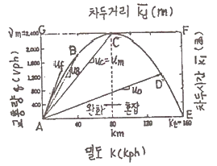
- 차두시간(초)의 최소점은 F점이다.
- 자유속도는 A점과 C점을 연결하는 기울기다.
- A점 밀도는 교통신호에 의해 정지된 상태의 밀도를 나타낸다.
- 차두거리(m)의 최소점은 G점이다.
(정답률: 86%)
31. Webster 방식에 의한 최소 지체도 주기(C) 산정식은? (단, L : 주기당총 손실시간, Y : 현시별 임계차로군의 교통량비의 합)
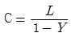
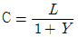
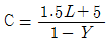
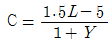
(정답률: 85%)
32. 시간평균속도(Time mean speed)와 공간평균속도(Space mean speed)에 대한 설명 중 틀린 것은?
- 시간평균속도는 공간평균속도보다 크거나 같다.
- 공간평균속도는 지점속도라고도 한다.
- 시간평균속도는 고정된 지점에서 단위 시간동안 통과한 모든 차량의 속도를 평균한 것이다.
- 구간 내의 모든 차가 동일 속도로 운행하고 있다면 시간평균속도와 공간평균속도는 같다.
(정답률: 69%)
33. 도로의 기능을 이동성과 접근성으로 구분할 때, 다음 중 이동성이 가장 높은 도로는?
- 고속도로
- 간선도로
- 집산도로
- 국지도로
(정답률: 85%)
34. 신호교차로의 특정 접근로에서의 차량의 접근속도는 45km/h, 감속도 4.4m/sec2, 교차로의 폭원 26m, 차량의 길이가 6m 일 때, 이 접근로에 대한 적절한 황색신호시간은? (단, 운전자의 반응시간은 1초로 가정한다.)
- 3초
- 4초
- 5초
- 6초
(정답률: 62%)
35. 교차로 교통통제의 목적으로 거리가 먼 것은?
- 사고감소 및 예방
- 교차로 운영 시간 단축
- 주도로에 통행우선권 부여
- 교차로 용량 증대 및 서비스 수준 향상
(정답률: 62%)
36. 교통류의 기본적인 요소가 아닌 것은?
- 교통량
- 속도
- 밀도
- 시간
(정답률: 86%)
37. 어느 대기행렬시스템의 특성을 M/D/1으로 표현한 경우, 이 시스템에 대한 설명이 옳은 것은?
- 도착확률분포 : random, 서비스율 : deterministic, 서비스기관의 수 : 1개소
- 도착확률분포 : deterministic, 서비스율 : random, 서비스기관의 수 : 1개소
- 도착률 : deterministic, 대기행렬상태 : random, 통행특성 : 일방통행
- 도착률 : random, 대기행렬상태 : drive through, 통행특성 : 일방통행
(정답률: 87%)
38. 충격파가 발생하는 교통류 상황이 아닌 것은?
- 저속차량 출현
- 정지
- 출발
- 추월
(정답률: 69%)
39. 국도의 제한속도를 설정하기 위하여 조사를 계획하고자 한다. 주행 자동차의 속도의 표준편차는 10km/h, 허용오차를 ±2km/h로 할 때 필요한 표본수는? (단, 신뢰도는 95%이다.)
- 100대
- 150대
- 200대
- 400대
(정답률: 73%)
40. 교통통제시설의 설치 및 운영 시 고려해야 할 사항으로 가장 거리가 먼 것은?
- 동일한 상황일지라도 경우에 따라 통제설비를 다양하게 사용할 필요가 있다.
- 판독성과 시인성을 유지하도록 규칙적인 유지보수가 필요하다.
- 시야에 들어오고, 충분히 반응할 수 있는 시간이 확보되는 것에 위치해야 한다.
- 운전자들의 주의가 집중되고 운전자들이 빨리 순응할 수 있도록 설계되어야 한다.
(정답률: 92%)
3과목: 교통시설
41. 교통관리시설의 교통정보수집 장치가 아닌 것은?
- 루프검지기
- 도로전광표지(VMS)
- 영상검지기
- 차량번호판 자동인식 장치
(정답률: 93%)
42. 길이 1000m 이상의 터널 또는 지하차도에서 오른쪽 길어깨의 폭을 2m 미만으로 하는 경우에는 최소 얼마의 간격으로 비상주차대를 설치하여야 하는가?
- 1000m
- 750m
- 500m
- 250m
(정답률: 83%)
43. 연결로의 설계속도를 적용할 때의 주의사항으로 옳지 않은 것은?
- 이용 교통량이 많을 것으로 예상되는 연결로는 본선의 설계기준을 적용하여 설계한다.
- 본선의 분류단 부근에는 보통 주행속도의 변화가 있으므로, 속도변화에 적합한 완화구간을 설치하여 운전자가 주행속도를 자연스럽게 바꿀 수 있도록 유도한다.
- 연결로의 실제 주행속도는 선형에 따라 변하므로 편경사 등의 기하구조를 설계할 때는 실제 주행속도에 대한 고려가 필요 없다.
- 연결로의 형식은 오른쪽 진출입을 원칙으로 하며, 이 때 진출입의 연속성 및 일관성이 유지되도록 하여야 한다.
(정답률: 81%)
44. 어느 고속도로 구간의 10년 후 예상 AADT는 70000대이다. 이 도로구간의 K계수는 0.08, 중방향계수는 0.65, PHF는 0.95 이다. 차로당 용량을 2000vph, 계획서비스수준의 v/c를 0.75로 가정할 때 필요한 일방향 차로수는?
- 1차로
- 3차로
- 5차로
- 7차로
(정답률: 74%)
45. 고속도로 및 주간선도로의 설계기준자동차는?
- 세미트레일러
- 대형자동차
- 승용자동차
- 소형자동차
(정답률: 78%)
46. 2차로 도로에서 앞지르기시거가 확보되지 아니하는 구간으로서 교통용량 및 안전성 등을 검토하여 필요하다고 인정되는 경우에 저속자동차가 다른 자동차에게 통행을 양보할 수 있도록 설치하는 것은?
- 대피차로
- 길어깨
- 양보차로
- 측도
(정답률: 91%)
47. 도로와 철도가 부득이 평면교차하는 경우 그 도로의 구조 기준이 틀린 것은?
- 건널목의 양측에서 각각 30m 이내의 구간(건널목 부분을 포함한다)은 직선으로 한다.
- 건널목의 양측에서 각각 10m 이내의 구간(건널목 부분을 포함한다) 도로의 종단경사는 5% 이하로 한다.
- 철도와의 교차각은 45° 이상으로 한다.
- 건널목에서 철도차량의 최고속도가 50km/h 미만인 경우 가시구간의 길이는 최소 110m 이상으로 한다.
(정답률: 80%)
48. 예각교차로의 형상과 개선 원칙에 대한 설명으로 틀린 것은?
- 자동차가 교차로 내부를 고속으로 통과하려는 현상이 발생된다.
- 시거가 불량하여 사고 위험이 높아진다.
- 정지선 간의 거리가 길고 교차로 면적이 넓어지기 쉽다.
- 교차로의 개선은 통상 주도로의 선형을 조정한다.
(정답률: 84%)
49. 중앙분리대의 설치에 대한 설명이 옳은 것은?
- 차로를 왕복 방향별로 분리하기 위해 중앙선을 두줄로 표시하는 경우 각 중앙선의 중심 사이의 간격을 0.25m 이상으로 한다.
- 중앙분리대는 도로 중심선 측의 교통마찰을 감소시켜 용량을 증대시키는 효과가 있다.
- 설계속도가 시속 90km인 도로의 중앙분리대에 폭 0.25m의 측대를 설치하였다.
- 중앙분리대의 폭은 고속도로 3.0m, 도시고속도로 2.0m, 일반도로 1.5m 미만으로 규정하고 있다.
(정답률: 45%)
50. 회전교차로(roundabout)와 기존 로터리(Rotary)의 비교가 틀린 것은?
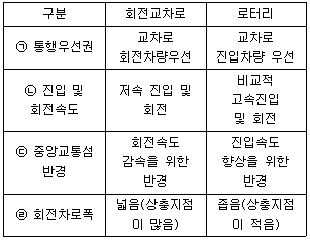
- ㉠
- ㉡
- ㉢
- ㉣
(정답률: 80%)
51. 72km/h의 속도로 주행 중인 차량이 종단경사가 –1%인 도로에서 필요한 정지시거는 얼마인가? (단, 종방향 미끄럼 마찰계수는 0.31, 반응시간은 2.5초이다.)
- 118.0m
- 95.0m
- 92.5m
- 87.5m
(정답률: 66%)
52. 평면곡선 반경을 설계하기 위하여 사용하는 공식의 내용이 옳은 것은? (단, R = 곡선반경, V = 설계속도, f = 마찰계수, λ = 편경사)
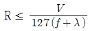
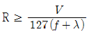
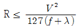
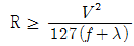
(정답률: 76%)
53. 도시지역 주간선도로의 설계속도 기준은 얼마인가?
- 120km/h 이상
- 100km/h 이상
- 80km/h 이상
- 60km/h 이상
(정답률: 82%)
54. 피크시 건물 연면적 1000m2당 주차 발생량이 150대일 때, 연면적이 3000m2 인 건물의 주차수요는? (단, 주차이용효율을 60%이다.)
- 300대
- 450대
- 750대
- 900대
(정답률: 71%)
55. 노면표시에 사용하는 색의 의미가 옳은 것은?
- 황색 : 반대 방향의 교통류 분리
- 백색 : 지정 방향의 교통류 분리
- 녹색 : 동일한 방향의 교통류 분리 및 경계표시
- 적색 : 주로 규제를 뜻하며, 반대 노면과의 분리
(정답률: 88%)
56. 다음 중 바람직한 도로 선형 설계 방침이 아닌 것은?
- 도로 선형은 지형과 조화를 이률 것
- 긴 직선 구간 사이에는 되도록 짧은 곡선을 둘 것
- 평면선형과 종단선형이 조화를 이룰 것
- 도로의 선형과 부속시설의 연관성을 고려할 것
(정답률: 92%)
57. 화재나 그 밖의 사고로 인하여 교통에 위험한 상황이 발생될 우려가 있는 터널에 설치하는 방재시설과 가장 거리가 먼 것은?
- 조명설비
- 소화설비
- 경보설비
- 비상전원설비
(정답률: 82%)
58. 다른 형식에 비하여 다이아몬드 인터체인지가 갖는 장점이 아닌 것은?
- 필요한 용지가 적게 든다.
- 교통의 우회거리가 짧은 편이다.
- 모든 교통류는 비교적 높은 속도를 유지할 수 있다.
- 연결로의 배치에 따라 교차도로상에서의 좌회전 동선을 우회전으로 변환시킬 수 있다.
(정답률: 72%)
59. 설계속도가 100km/h인 고속도로의 최대종단경사기준은? (단, 지형은 평지이며 소형차도로인 경우는 고려하지 않음.)
- 3%
- 4%
- 5%
- 6%
(정답률: 66%)
60. 전진주차 방법만 채용되고 차로폭은 작아도 되나 차로 진행 방향으로 긴 주차폭이 필요하며 1대당 주차면적이 최대인 각도 주차방식은?
- 90° 주차
- 60° 주차
- 45° 주차
- 30° 주차
(정답률: 88%)
4과목: 도시계획개론
61. 도시계획이론의 패러다임 중 합리성과 의사 결정을 위한 일련의 선택 과정을 강조하는 모형으로, 종합계획 (Master Plan) 혹은 청사진적 계획 (Blue Print Plan)이라고도 하는 것은?
- 점진주의(incrementalism)
- 합리주의(rationalism)
- 혼합주의(mixed scanning)
- 옹호주의(advacacy)
(정답률: 60%)
62. 다음과 가장 관련이 깊은 도시구성형태는?
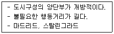
- 격자형
- 방사환상형
- 격자방사형
- 대상형
(정답률: 56%)
63. 도시의 무질서한 확산을 방지하고 도시주변의 자연환경을 보전하여 도시민의 건전한 생활환경을 확보하기 위하여 도시의 개발을 제한할 필요가 있거나 보안상 도시의 개발을 제한할 필요가 있는 경우에 지정하는 용도구역을?
- 개발제한구역
- 특정시설제한구역
- 도시자연공원구역
- 시가화조정구역
(정답률: 73%)
64. 특별시·광역시·특별자치시·시 또는 군의 관할 구역에 대하여 기본적인 공간구조와 장기발전방향을 제시하는 종합계획으로서 도시·군관리계획 수립의 지침이 되는 계획은?
- 도시·군기본계획
- 지구단위계획
- 용도지역계획
- 광역도시계획
(정답률: 68%)
65. 토지이용과 교통의 관계에 대한 설명으로 틀린 것은?
- 토지이용과 교통은 상호의존적으로 작용하며 순환적인 관계를 가지고 있다.
- 교통발생량은 토지이용의 용도배분에 따라 다르다.
- 토지이용체계의 변화는 정태적이기 때문에 교통의 토지이용에 대한 영향을 떼내어 관찰하기 용이하다.
- 토지이용이 집약적인 경우 교통시설의 양은 증가한다.
(정답률: 64%)
66. 다음 중 아디케스법의 기본 개념으로 가장 알맞은 것은?
- 토지 구획 정리에 관한 것
- 도시의 장기 발전계획에 관한 것
- 재개발 계획에 관한 것
- 신도시 개발 계획에 관한 것
(정답률: 70%)
67. 공동구에 관한 설명으로 틀린 것은?
- 가로와 도시의 미관을 개선할 수 있다.
- 노면의 내구력이 감소하여 노면유지비가 증대된다.
- 빈번한 노면굴착의 방지로 교통장애를 제거할 수 있다.
- 수용 시설의 유지관리가 용이하다.
(정답률: 73%)
68. 격자형 가로망에 관한 설명으로 틀린 것은?
- 대표적인 도시로 뉴욕, 필라델피아가 있다.
- 지형이 평탄한 도시에 적합하다.
- 도로기능의 다양성이 결여되어 있다.
- 교통의 흐름이 도심으로 집중하는 현상이 강하다.
(정답률: 67%)
69. 독특한 자연경관이나 역사적 건물의 보전이라는 시대적 요청에 따라, 보전에 의해 수반되는 토지소유자에 대한 보상 문제의 해결방안으로 대두된 제도는?
- TDR(Transfer of Development Rights)
- SDC(Sub-Division Control)
- PUD(Planned Unit Development)
- ZUD(Zoning Unit Development)
(정답률: 66%)
70. 중세 유럽의 도시에서 나타나는 공통적인 물리적 특성과 거리가 먼 것은?
- 모든 동선이 중앙의 시장이나 교회 광장에 집중하도록 구성되었다.
- 성벽과 대규모 사원이 도시공간의 주된 구성요소이다.
- 밀집된 형태의 중점을 지닌 주택군이 구성되고, 이들은 컬데삭으로 연결되었다.
- 방어를 위해 사용된 해자, 운하, 강이 개별도시를 고립시켰다.
(정답률: 53%)
71. 도시의 구성요소와 거리가 먼 것은?
- 시민
- 전통성
- 활동
- 토지 및 시설
(정답률: 75%)
72. 고대 로마시대에 공공 건축물에 둘러싸여 집회장이나 시장으로 사용되었던 도시의 공공광장을 무엇이라 하는가?
- 실체스터(Silchester)
- 포럼(Forum)
- 바실리카(Basilica)
- 아고라(Agora)
(정답률: 70%)
73. 다음 중 힐 호스트(O.Hilhost)의 지역 구분에 해당하지 않는 것은?
- 분극지역(polarizied region)
- 계획권역(planning region)
- 동질지역(homogeneous)
- 결절지역(nodal area)
(정답률: 56%)
74. 지역 간 투입 산출법의 특징이 아닌 것은?
- 가격이 일정하다고 가정하기 때문에 상대가격의 변화로 인한 대체효과를 반영할 수 없다.
- 최종 생산물의 외생적인 영향력을 예측하는데 이용할 수 있다.
- 투입계수표는 지역의 기반산업에 투입되는 중간재의 투입정도가 적절한지의 여부를 판단할 수 있게 해준다.
- 투입계수가 안정적이어서 분석 단위가 세분화되거나 산업이 기술변화에 민감하여도 안정성 문제가 없다.
(정답률: 75%)
75. 다음 중 용도지역에 해당하지 않는 것은?
- 도시지역
- 관리지역
- 준농림지역
- 자연환경보전지역
(정답률: 67%)
76. A도시의 3차산업 종사자수는 10만명이다. 3차산업 종사자 1인당 평균상면적이 15m2, 평균층수 2층, 건폐율 60%, 공공용지율 50%로 할 경우 소요 토지면적은?
- 150ha
- 200ha
- 250ha
- 300ha
(정답률: 30%)
77. 도시·군계획 수립 대상지역의 일부에 대하여 토지이용을 합리화하고 그 기능을 증진시키며 미관을 개선하고 양호한 환경을 확보하며, 그 지역을 체계적·계획적으로 관리하기 위하여 수립하는 것은?
- 농어촌발전계획
- 지구단위계획
- 도시경관계획
- 도시환경계획
(정답률: 54%)
78. 샤핀(F. S. Chapin)이 제시한 토지이용의 결정요인 중 공공 이익의 요소에 해당하지 않는 것은?
- 쾌적성
- 보건성
- 균일성
- 편리성
(정답률: 57%)
79. 집단생잔법(chhort survival method)으로 인구를 예측할 때 고려하지 않아도 되는 것은?
- 사망률
- 전입, 전출율
- 출산율
- 한계인구
(정답률: 69%)
80. 도시발전과 토지이용 패턴에 관한 도시공간구조를 설명하는 동심원 이론을 처음으로 주장한 사람은?
- H. Hoyt
- C. D. Harris
- E. W. Burgess
- E. L. Ullman
(정답률: 59%)
5과목: 교통관계법규
81. 국가통합교통체계효율화법에 따른 국가기간 교통시설에 해당하지 않는 것은?
- 항공법에 따른 공항
- 항만법에 따른 무역항
- 철도건설법에 따른 고속철도, 광역철도 및 일반철도
- 국가통합교통체계효율화법에 따른 광역복합환승센터
(정답률: 73%)
82. 도로 관리청의 구분이 틀린 것은?
- 지선을 포함한 국도 : 국토교통부장관
- 특별시·광역시가 관할하는 구역의 국도대체우회도로 : 특별시장·광역시장
- 국자지원지방도 : 특별자치시장·도지사·특별자치도지사(특별시와 광역시에 있는 구간은 해당 시장)
- 국도와 국가지원지방도 외의 그 밖의 도로 : 해당 노선을 인정한 행정청
(정답률: 43%)
83. 국토교통부장관이 도시교통의 원활한 소통과 교통 편의의 증진을 위하여 도시교통정비지역으로 지정·고시할 수 있는 도시의 인구 기준은? (단, 도농복합형태의 시의 경우에는 고려하지 않는다.)
- 8만명 이상
- 10만명 이상
- 15만명 이상
- 20만명 이상
(정답률: 83%)
84. 교통안전법에 따른 용어의 정의가 틀린 것은?
- 교통사고 : 교통수단의 운행·항행·운항과 관련된 사람의 사상 또는 물건의 손괴를 말한다.
- 교통행정기관 : 법령에 의하여 교통수단·교통시설 또는 교통체계의 운행·운항·설치 또는 운영 등에 관하여 교통사업자에 대한 지도·감독을 행하는 지정행정기관의 장, 특별시장·광역시장·도지사·특별자치도지사 또는 시장·군수·구청장을 말한다.
- 교통시설 : 도로·철도·궤도·항만·어랑·수로·공항·비행장 등 교통수단의 운행·운항 또는 항행에 필요한 시설과 그 시설에 부속되어 사람의 이동 또는 교통수단의 원활하고 안전한 운행·운항 또는 항행을 보조하는 교통안전표지·교통관제시설·항행안전시설 등의 시설 또는 공작물을 말한다.
- 차량 : 도로교통법에 의한 자동차(자전거 및 원동기장치 자전거 제외), 긴급자동차 및 차마와 철도 및 궤도에 의하여 교통용으로 사용되는 용구를 말한다.
(정답률: 15%)
85. 도시교통정비촉진법 시행령에 따라 시장 또는 군수가 중기계획의 수립을 위하여 실시하는 조사 내용이 아닌 것은?
- 주차장 현황과 그 확충계획
- 대중교통 운영 현황
- 교통안전시설 확충계획
- 교통혼잡지역의 현황·원인 및 대책
(정답률: 53%)
86. 도로법에 따른 “도로의 부속물”에 해당하지 않은 것은? (단, 가로등 및 가로수는 도로 관리청이 설치한것이다.)
- 도로 원표
- 이정표
- 도로용 엘리베이터
- 가로등 및 가로수
(정답률: 61%)
87. 부설주차장의 설치대상 시설물 종류 및 설치기준이 틀린 것은?
- 의료시설(정신병원·요양병원 및 격리병원 제외) : 시설면적 150m2당 1대
- 숙박시설 : 시설면적 150m2당 1대
- 판매시설 : 시설면적 150m2당 1대
- 방송국 : 시설면적 150m2당 1대
(정답률: 60%)
88. 도로교통법 시행령상 밤에 도로에서 차를 운행하는 경우 운전자가 켜야 하는 등화 구분이 틀린 것은?
- 자동차 – 전조등·차폭등·미등·번호등
- 자동차등 외의 모든 차 – 지방경찰청이 정하여 고시하는 등화
- 원동기장치자전거 – 전조등 및 미등
- 견인되는 차 – 실내조명등
(정답률: 71%)
89. 도시교통정비촉진법상 혼잡통행료 부과지역으로 지정할 수 있는 토·일요일과 공휴일을 제외한 평일의 시간대별 차량의 평균 통행속도 또는 교차로 지체시간 기준이 틀린 것은?
- 평균통행속도가 30km/h 미만인 상태가 하루 3회 이상 발생하는 편도 4차로 이상의 도시고속도로와 그 주변 영향권
- 평균통행속도가 21km/h 미만이니 상태가 하루 3회 이상 발생하는 편도 3차로 이하의 간선도로와 주변 영향권
- 평균제어지체시간이 100초 이상인 상태가 하루 3회 이상 발생하는 신호교차로와 그 주변 영향력
- 평균운영지체시간이 50초 이상인 상태가 하루 3회 이상 발생하는 무신호교차로와 그 주변 영향권
(정답률: 57%)
90. 도로교통법상 차마의 교통을 원활하게 하기 위하여 필요한 경우 도로에 안전행정부령으로 정하는 차로를 설치할 수 있는 자는?
- 지방경찰청장
- 도지사
- 군수
- 시장
(정답률: 62%)
91. 긴급자동차의 지정을 받으려는 사람 또는 기관 등은 지정신청서와 첨부 서류를 누구에게 제출하여야 하는가?
- 안전행정부장관
- 시·도지사
- 지방경찰청장
- 군수
(정답률: 60%)
92. 도시교통정비촉진법 시행령에 따른 지방도시교통정책심의위원회의 구성에 관한 설명이 옳은 것은?
- 위원장 및 부위원장 각 1명을 포함한 30명 이내의 위원으로 구성한다.
- 위원장은 국토교통부의 해당 업무를 담당하는 국장이 되고, 부위원장은 부시장 또는 부지사가 된다.
- 위원장이 교통, 도로 또는 도시계획에 관한 학식과 경험이 풍부한 사람 중에서 임명하거나 위촉하는 사람은 위원이 될 수 없다.
- 공무원이 아닌 위원의 임기는 3년으로 한다.
(정답률: 63%)
93. 노외주차장의 출구 및 입구를 철치하여서는 아니되는 장소 기준이 틀린 것은?
- 횡단보도로부터 5m 이내에 있는 도로의 부분
- 종단기울기가 6%를 초과하는 도로
- 너비 4m 미만의 도로(주차대수 200대 이상인 경우에는 너비 10m 미만의 도로)
- 아동전용시설의 출입구로부터 20m 이내에 있는 도로의 부분
(정답률: 56%)
94. 도로법상 도로의 종류 중 지방도에 해당하는 것은?
- 자동차 전용도로로서 광역시장이 그 노선을 인정한 것
- 중요도시, 지정항만, 중요비행장, 국가산업단지 등을 연결하는 도로로서 대통령령으로 그 노선이 지정된 것
- 간선 또는 보조간선 기능을 수행하는 도로로서 특별시장이 그 노선을 인정한 것
- 시청 또는 군청 소재지를 서로 연결하는 도로로서 관할 도지사가 그 노선을 인정한 것
(정답률: 78%)
95. 도시교통정비지역으로 지정된 행정구역을 관할하는 시장이나 군수는 도시교통정비기본계획을 몇 년 단위로 수립하여야 하는가?
- 30년
- 20년
- 10년
- 5년
(정답률: 58%)
96. 도로교통법상 원활한 교통을 확보하기 위하기 특히 필요한 경우, 시장 등은 누구와 협의하여 도로에 전용차로를 설치할 수 있는가?
- 지방경찰청장
- 국토교통부장관
- 첨단교통정보센터장
- 구청장
(정답률: 69%)
97. 교통안전법상의 계획별 수립 기간 기준이 틀린 것은?
- 지역교통안전시행계획 – 매년
- 국가교통안전기본계획 – 5년 단위
- 시·도교통안전기본계획 – 5년 단위
- 시·군·구교통안전기본계획 – 매년
(정답률: 60%)
98. 도로교통법 시행규칙에 따라 아나전표지의 크기를 교통상황에 따라 기본규격보다 확대할 수 있는 비율기준이 아닌 것은? (단, 일반도로의 경우이다.)
- 1.3배
- 1.6배
- 2배
- 2.5배
(정답률: 35%)
99. 도로교통법상 주차금지 장소의 기준으로 틀린 것은?
- 소방용 기계가 설치된 곳으로부터 5m 이내인 곳
- 다리 위
- 터널 안
- 화재경보기로부터 5m 이내인 곳
(정답률: 63%)
100. 도로법에 따른 도로의 종류에 해당하는 것만으로 나열된 것은?
- 고속도로, 일반도로, 자동차전용도로
- 고속국도, 일반국도, 특별시도, 지방도
- 국도, 도도, 시도, 군도
- 고속국도. 일반국도, 특별국도, 지방도
(정답률: 80%)
6과목: 교통안전
101. 다음 중 자동차 운전 시에 발생하는 사각(死角)의 요소와 가장 거리가 먼 것은?
- 자동차의 구조 상에서 생기는 사각
- 소음으로 인하여 생기는 사각
- 다른 장애물로 인하여 생기는 사각
- 눈의 기능으로 인하여 생기는 사각
(정답률: 84%)
102. 사고다발지점을 선정하기 위한 지표로 거리가 먼 것은?
- 인구 10만명 당 사고율
- 등록차량 1만대 당 사고율
- 연간 교통사고건수
- 고령운전자 사고건수
(정답률: 80%)
103. 교통사고의 예방 또는 그로 인한 피해를 경감시키기 위한 대책인 3E에 해당하지 않은 것은?
- Education
- Enforcement
- Environment
- Engineering
(정답률: 90%)
104. 교통사고 현장에서 발견되는 타이어 자국 (Tire mark)중 제동에 의해 타이어가 노면 위에 종방향으로 미끄러지면서 타이어와 노면의 마찰에 의하여 만들어지는 흔적은?
- 스키드마크
- 요마크
- 스카프마크
- 플랫타이어마크
(정답률: 84%)
1⑤. 차량의 미끄럼거리 추정에 관한 설명이 틀린 것은?
- 직선 미끄럼의 경우 차량의 미끄럼 거리는 그 차량의 모든 바퀴들의 미끄럼 흔적 중 가장 긴 미끄럼 흔적의 길이로 한다.
- 양후륜의 미끄럼 흔적들 모두가 전륜의 미끄럼 흔적을 벗어나지 않으면 직선 미끄럼 간주한다.
- 미끄럼 흔적 중간에 갭이 있을 경우 이를 포함하여 미끄럼 거리로 간주한다.
- 차륜의 미끄럼 흔적으로부터 추정된 미끄럼 거리는 사고차량의 초기속도 추정을 가능하게 한다.
(정답률: 93%)
106. 교통사고조사에 포함되어야 할 주요 내용과 가장 거리가 먼 것은?
- 사고발생지점 주변의 도로의 보행자수
- 사고의 발생지점 및 발생시각
- 사고발생시의 도로조건
- 사고에 관련된 차종 및 차량의 수
(정답률: 92%)
107. 지도 상에 일정 기간 동안 발생한 사고지점에 그 사고의 종류와 피해 정도에 따라 핀, 색종이를 붙이거나 표시를 하여 사고가 집중적으로 발생하는 지점을 나타내는 것은?
- 사고지점도
- 사고현황도
- 충돌도
- 대상도
(정답률: 82%)
108. 한 차량이 도로를 이탈하여 도로의 맨 끝으로부터 수직거리 15m, 수평거리 10m 저점에 추락하였다면 이 차량이 도로를 이탈할 때의 속도는?
- 15.1kph
- 20.6kph
- 26.1kph
- 31.6kph
(정답률: 60%)
109. 어느 도로를 주행 중이던 차량이 급정거하면서 생긴 활주흔(skid mark)의 길이가 21m 이었을 때, 이 차량의 제동 전 초기속도는? (단, 타이어와 노면의 마찰계수는 0.7이며, 평탄한 구간이다.)
- 약 53km/h
- 약 61km/h
- 약 73km/h
- 약 91km/h
(정답률: 63%)
110. 사고다발지점에 대한 개선사업의 경제적 가치를 평가하는 간단한 방법으로, 사업 후 1년 간의 사고감소 효과를 순화폐 가치로 환산하여 사업소요 비용과 비교하는 방법은?
- FYRR 방법
- IRR 방법
- B/C 방법
- NPV 방법
(정답률: 84%)
111. 다음 중 교통신호 운영을 위한 교통신호기 설치 근거로 고려해야 할 교차로의 교통 소통 상황으로 거리가 먼 것은?
- 차량 교통량
- 보행자 교통량
- 교통사고기록
- 주요 건물 주차장 위치
(정답률: 87%)
112. 사고건수법에 따른 교통사고의 위험지점 선정 시 필요한 자료로 가장 거리가 먼 것은?
- 기간
- 사고지점
- 구간거리
- 교통량
(정답률: 66%)
113. 다음 중 사망사고의 정의로 옳은 것은? (단, 교통안전법에 따른다.)
- 교통사고 발생 시부터 1일(24시간) 이내 사망자를 낸 사고
- 교통사고 발생 시부터 5일(120시간) 이내 사망자를 낸 사고
- 교통사고 발생 시부터 10일(240시간) 이내 사망자를 낸 사고
- 교통사고 발생 시부터 30일(720시간) 이내 사망자를 낸 사고
(정답률: 84%)
114. 35km의 도로 구간에서 1년 동안 50건의 교통사고가 발생하였다. 일평균 교통량이 6000대이고 총 사고건수 중 5%가 치명적인 사고였다면 1억대·km당 치명적 사고의 발생률은?
- 65.2건
- 32.6건
- 3.26건
- 1.46건
(정답률: 80%)
115. 주거지역의 높은 차량 속도로 인한 주거환경 침해 및 어린이·보행자 교통사고를 예방하기 위해 설치할 수 있는 안전시설은?
- 과속방지턱
- 방호책
- 반사경
- 횡단보도
(정답률: 93%)
116. 구간길이가 1km인 도로에서 10년 동안 사망사고 3건, 부상 사고 10건, 대물피해사고가 60건 발생하였다. 이 도로의 일평균교통량이 6000대일 때의 교통사고율은? (단, 교통사고 피해정도에 의한 방법을 따르며, 심각도계수는 사망사고 12, 부상사고 3, 대물피해사고 1로 가정한다.)
- 약 4.75건
- 약 5.25건
- 약 5.75건
- 약 6.25건
(정답률: 60%)
117. 다음 중 교통안전과 이동성이 상충하지 않는 것은?
- 안전벨트
- 접근을 제한하는 가로배치
- 속도제한
- 과속방지턱
(정답률: 80%)
118. 다음 중 방호울타리가 갖추어야 하는 조건으로 가장 거리가 먼 것은?
- 보행자의 횡단을 허용할 수 있어야 한다.
- 차량을 감속시킬 수 있어야 한다.
- 차량의 파손을 최소한으로 줄이도록 한다.
- 차량이 튕겨 나가지 않아야 한다.
(정답률: 84%)
119. 교통사고다발지역 개선 방법 중 시거(Sight Distance) 불량에 대한 개선사항이 아닌 것은?
- 시야 장애물 제거
- 중앙분리대 설치
- 시선유도표지 설치
- 가로조명 개선
(정답률: 90%)
120. 사고 경험에 기초한 위험지점을 선정을 위한 기법으로 모든 규모의 체계와 모든 범위의 교통량에 적용될 수 있으며 사고 발생은 포아송 분포를 따른다는 가정에 기초한 것은?
- 사고율법
- 사고건수법
- 사고건수-율법
- 율-품질관리법
(정답률: 80%)